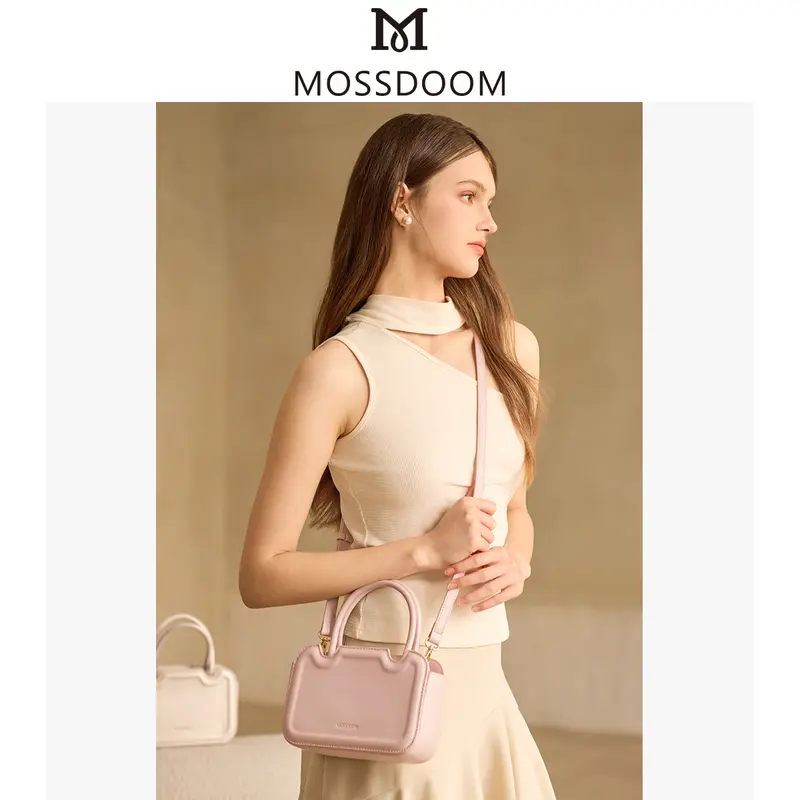

MOSSDOOM menghadirkan koleksi tas mini berbahan kulit PU premium,
dengan desain compact dan ringan. Tampil elegan di berbagai kesempatan,
dari santai hingga semi-formal. Tersedia dalam berbagai pilihan warna yang mudah dipadukan.
Deskripsi Produk
MOSSDOOM - LYSMAREBAG
Harga Jual:
Blue : Rp 199.000
Light Pink : Rp 158.900
Pink : Rp 197.000
Brown : Rp 187.000
Beige White : Rp 160.900
Black : Rp 187.000
Bahan / Jenis: Kulit PU premium
Kemasan: Totebag
Ukuran (P × L × T): 20 × 7.5 × 14 cm
Isi / Volume: 1 tas mini
Berat: 0.36 kg
Varian: Blue, Light Pink, Pink, Brown, Beige White, Black
Garansi / Keamanan:
Foto produk adalah foto asli. Garansi tiba tepat waktu, dan jika terjadi kendala, layanan pelanggan siap membantu hingga selesai.
Komposisi:
Kulit PU, lapisan dalam kain polyester, aksesoris logam, tali bahu adjustable & detachable.
Value (Keunggulan):
✔ Gratis gantungan tas eksklusif
✔ Tali bahu panjang dapat diatur dan dilepas
✔ Desain compact namun muat barang esensial
✔ Cocok untuk gaya santai maupun semi-formal
Cara Penggunaan:
Gunakan sebagai tas bahu atau handbag. Atur panjang tali sesuai kebutuhan, lepaskan tali jika ingin tampil lebih formal.
Deskripsi Produk:
Tas mini dari Moosdom seri Lysmarebag ini mengusung desain elegan dengan bahan kulit PU premium yang ringan namun kokoh.
Struktur internal terdiri dari satu saku besar, satu saku sisipan, dan satu saku beritsleting untuk menjaga barang tetap aman.
Dengan dimensi ringkas, tas ini ideal untuk aktivitas harian, hangout, atau acara semi-formal, memberi kesan chic dan modern bagi penggunanya.
Pilihan Warna Cantik
Tersedia warna Blue, Light Pink, Pink, Brown, Beige White, dan Black.

Gaya Chic untuk Setiap Hari
Tas mini Moosdom seri Lysmarebag, elegan dan ringan, cocok untuk gaya santai hingga semi-formal.
Ukuran Compact Ideal
Dimensi 20 × 7.5 × 14 cm, muat ponsel, dompet mini, dan kebutuhan harian.
Perbandingan Nyata
Kapasitas cukup untuk smartphone ukuran 6,7 inci + barang kecil lainnya.
Kapasitas & Kompartemen
1 saku utama, 1 saku sisipan, dan 1 saku beritsleting.
Detail Ekslusif
Dilengkapi gantungan tas gratis, tali bahu adjustable & detachable.
Testimoni & Galeri
Testimoni
Galeri Pembeli
Kontak
Tertarik dengan MOSSDOOM - LYSMAREBAG? Pilih warna favorit Anda dan hubungi admin sekarang untuk pemesanan.
Stok terbatas, jangan sampai kehabisan!